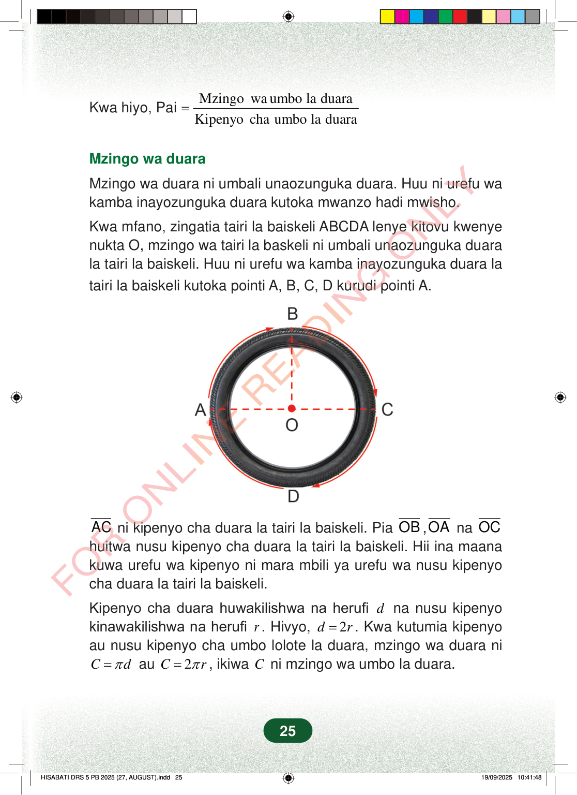

Kwa hiyo, PaiMzingowa umbo la duaraKipenyochaumbo la duara=Mzingo wa duaraMzingo wa duara ni umbali unaozunguka duara. Huu ni urefu wakamba inayozunguka duara kutoka mwanzo hadi mwisho.Kwa mfano, zingatia tairi la baiskeli ABCDA lenye kitovu kwenyenukta O, mzingo wa tairi la baskeli ni umbali unaozunguka duarala tairi la baiskeli. Huu ni urefu wa kamba inayozunguka duara latairi la baiskeli kutoka pointi A, B, C, D kurudi pointi A.ACni kipenyo cha duara la tairi la baiskeli. PiaOB,OAnaOChuitwa nusu kipenyo cha duara la tairi la baiskeli. Hii ina maanakuwa urefu wa kipenyo ni mara mbili ya urefu wa nusu kipenyocha duara la tairi la baiskeli.Kipenyo cha duara huwakilishwa na herufidna nusu kipenyokinawakilishwa na herufir. Hivyo,2dr=. Kwa kutumia kipenyoau nusu kipenyo cha umbo lolote la duara, mzingo wa duara niCdπ=au2Crπ=, ikiwaCni mzingo wa umbo la duara.25
Kwa hiyo, Pai Mzingo wa umbo la duara Kipenyo cha umbo la duara =
Mzingo wa duara
Mzingo wa duara ni umbali unaozunguka duara. Huu ni urefu wa kamba inayozunguka duara kutoka mwanzo hadi mwisho.
Kwa mfano, zingatia tairi la baiskeli ABCDA lenye kitovu kwenye nukta O, mzingo wa tairi la baskeli ni umbali unaozunguka duara la tairi la baiskeli. Huu ni urefu wa kamba inayozunguka duara la tairi la baiskeli kutoka pointi A, B, C, D kurudi pointi A.
AC ni kipenyo cha duara la tairi la baiskeli. Pia OB , OA na OC huitwa nusu kipenyo cha duara la tairi la baiskeli. Hii ina maana kuwa urefu wa kipenyo ni mara mbili ya urefu wa nusu kipenyo cha duara la tairi la baiskeli.
Kipenyo cha duara huwakilishwa na herufi d na nusu kipenyo kinawakilishwa na herufi r . Hivyo, 2 d r = . Kwa kutumia kipenyo au nusu kipenyo cha umbo lolote la duara, mzingo wa duara ni
C d π = au 2 C r π = , ikiwa C ni mzingo wa umbo la duara.
25
Kwa hiyo, Pai =<math><mfrac><mtext>Mzingo wa umbo la duara</mtext><mtext>Kipenyo cha umbo la duara</mtext></mfrac></math>Mzingo wa duaraMzingo wa duara ni umbali unaozunguka duara.Huu ni urefu wa kamba inayozunguka duara kutoka mwanzo hadi mwisho.Kwa mfano, zingatia tairi la baiskeli ABCDA lenye kitovu kwenye nukta O, mzingo wa tairi la baiskeli ni umbali unaozunguka duara la tairi la baiskeli.Huu ni urefu wa kamba inayozunguka duara la tairi la baiskeli kutoka pointi A, B, C, D kurudi pointi A.Tairi la baiskeli linaonyesha duara lenye kitovu O. Mstari A hadi C ni kipenyo, na mstari wa pembeni wenye mishale unaonyesha mzunguko kupitia A, B, C na D.BACODAC ni kipenyo cha duara la tairi la baiskeli.Pia OB, OA na OC huitwa nusu kipenyo cha duara la tairi la baiskeli.Hii ina maana kuwa urefu wa kipenyo ni mara mbili ya urefu wa nusu kipenyo cha duara la tairi la baiskeli.Kipenyo cha duara huwakilishwa na herufi d na nusu kipenyo kinawakilishwa na herufi r.Hivyo, <math><mrow><mi>d</mi><mo>=</mo><mn>2</mn><mi>r</mi></mrow></math>.Kwa kutumia kipenyo au nusu kipenyo cha umbo lolote la duara, mzingo wa duara ni <math><mrow><mi>C</mi><mo>=</mo><mi>π</mi><mi>d</mi></mrow></math> au <math><mrow><mi>C</mi><mo>=</mo><mn>2</mn><mi>π</mi><mi>r</mi></mrow></math>, ikiwa C ni mzingo wa umbo la duara.